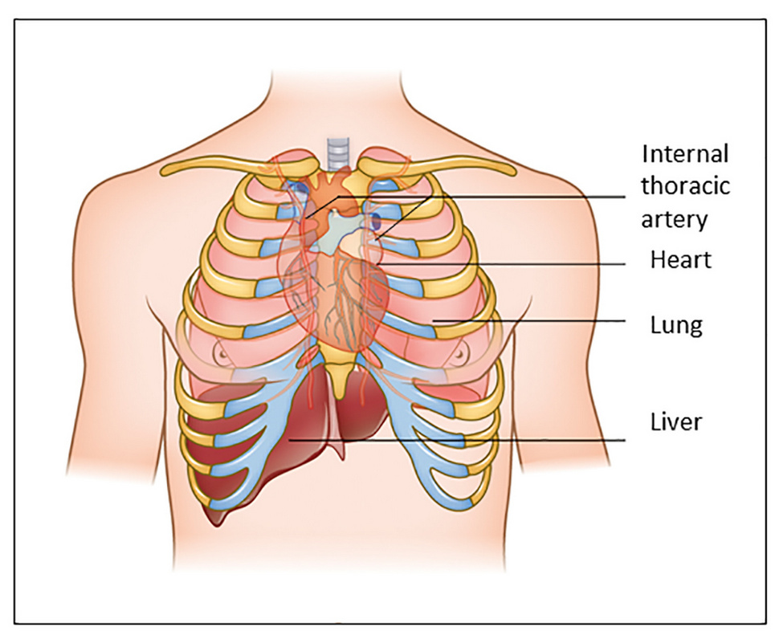
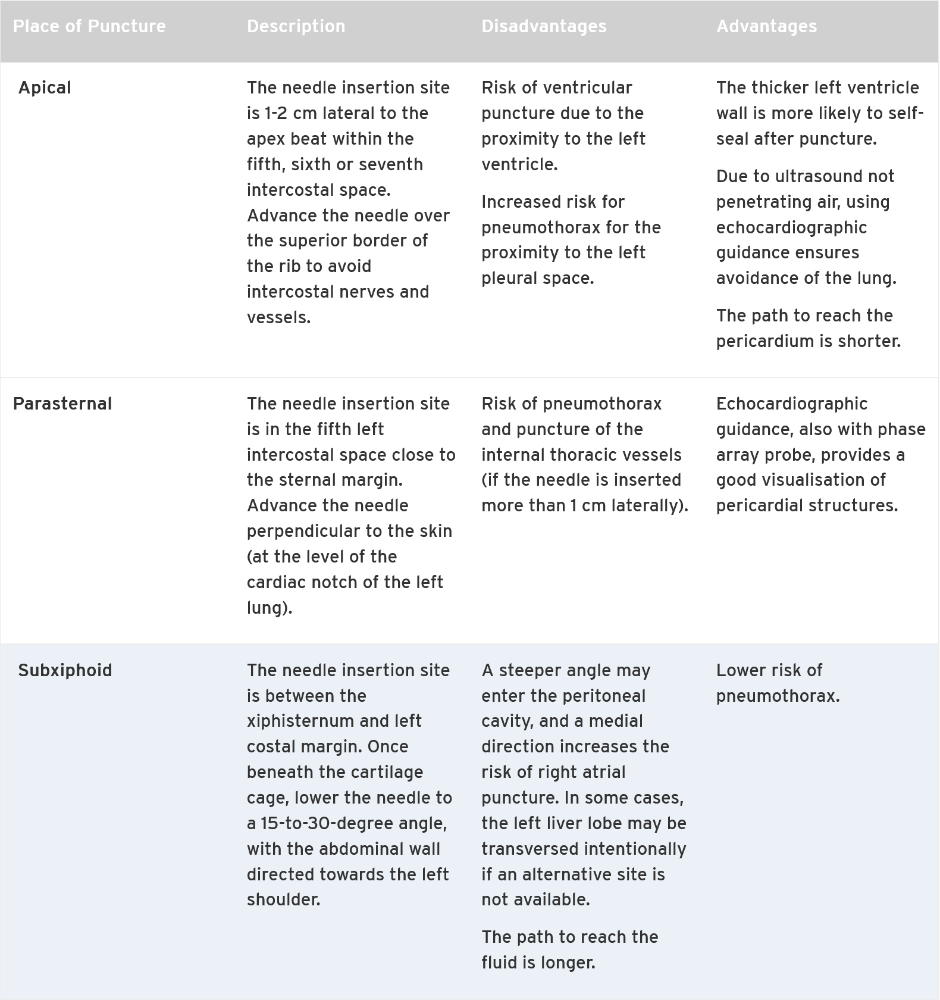
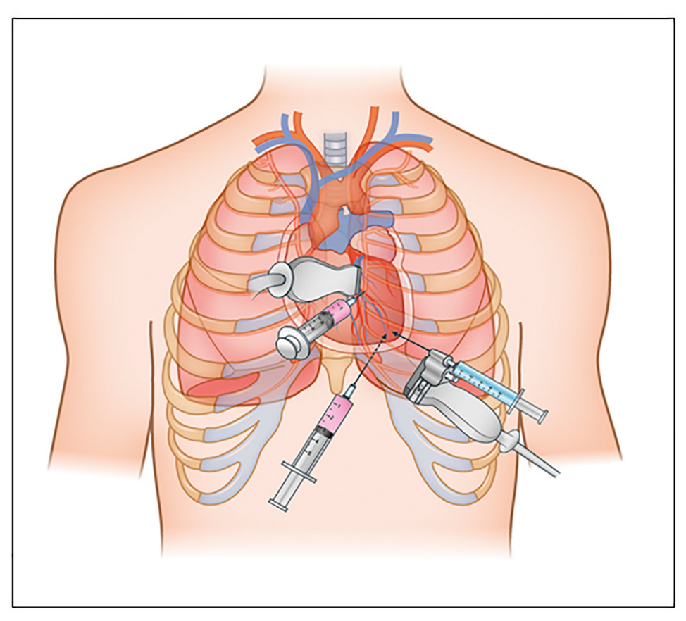
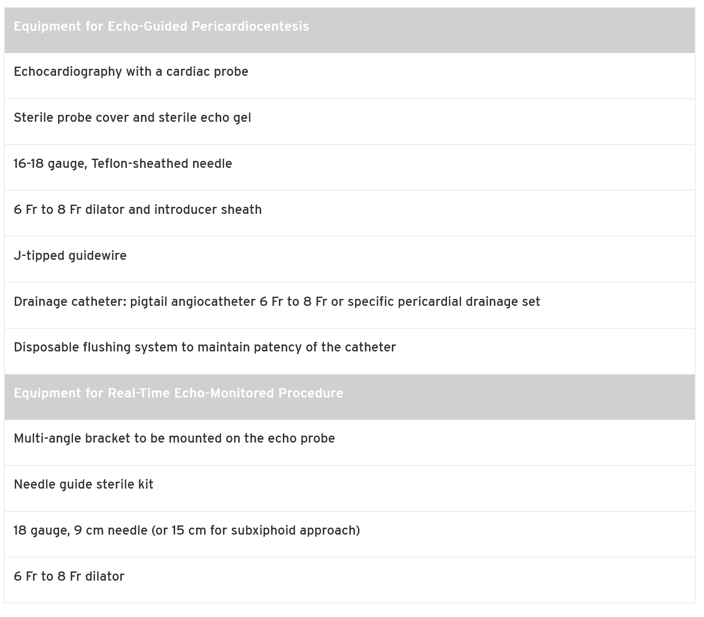
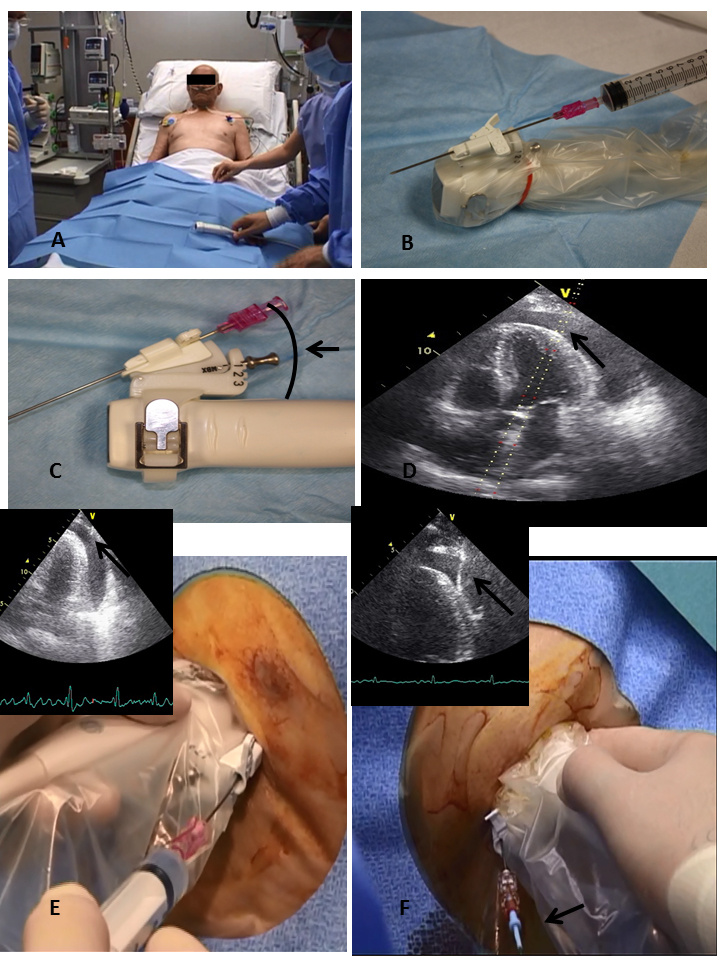

Indications
Pericardiocentesis is indicated for both therapeutic and diagnostic purposes.
Therapeutic:
- Cardiac Tamponade: Life-threatening compression requiring emergent fluid removal.
- Symptomatic moderate-to-large effusions not responding to medical therapy.
- Chronic large effusions (>20mm in diastole, >3 months).
Diagnostic:
- Suspected tuberculous, bacterial, or neoplastic pericarditis.
Contraindications
Primarily relative, especially in life-threatening tamponade.
Absolute (Needle drainage):
- Aortic dissection.
- Post-infarction free wall rupture.
- (These are surgical emergencies. Can be a bridge if surgery is delayed).
Relative:
- Uncorrected coagulopathy / Anticoagulant therapy.
- Thrombocytopenia (Platelets <50,000/mm³).
Key Anatomical Considerations
Note proximity of heart to lungs, liver, and internal thoracic artery.
Procedural Approaches Compared
Echo-guidance is the modern standard of care. The optimal entry site is where the fluid is maximal and closest to the probe, avoiding vital structures. The table below summarises the pros and cons of each anatomical approach.


Required Equipment
Echo-Guided Technique: Key Steps
- Preparation: Position patient semi-reclined (30°). Aseptic technique. Local anaesthetic. Continuous ECG and BP monitoring.
- Site Selection: Use echo to find the largest pocket of fluid closest to the skin.
- Needle Advancement: Advance a 16-18G needle with a saline-filled syringe under constant aspiration. Visualise with echo.
- Confirm Position: Once fluid is aspirated, inject agitated saline (5ml). Bubbles should appear in the pericardial space on echo.
- Seldinger Technique: Insert guidewire, remove needle. Pass dilator, then insert pigtail catheter.
- Drainage: Aspirate fluid slowly. Initially remove enough to normalise haemodynamics (not >1L).
- Post-Procedure: Secure catheter. Repeat echo. Consider chest X-ray to exclude pneumothorax.
Echo Guidance in Action
Continuous visualisation of the needle tip (E) and guidewire (F) is crucial for safety.
Pearls & Pitfalls
Pearls
- The drainage of even a small amount of fluid can cause dramatic haemodynamic improvement.
- An echo-selected site (often apical) has a higher success and lower complication rate than a routine subxiphoid approach.
- Agitated saline contrast is a simple, effective way to confirm catheter tip position in the pericardial space.
- Leaving a catheter in for extended drainage (24-72h) significantly reduces recurrence.
Pitfalls
- Avoid positive pressure ventilation if possible; it can worsen haemodynamic compromise.
- Diuretics are contraindicated and can be fatal.
- Rapid drainage of >1L can cause rare but life-threatening pericardial decompression syndrome (pulmonary oedema/shock).
- A bloody aspirate could be haemorrhagic effusion or cardiac chamber puncture. Use agitated saline to differentiate.